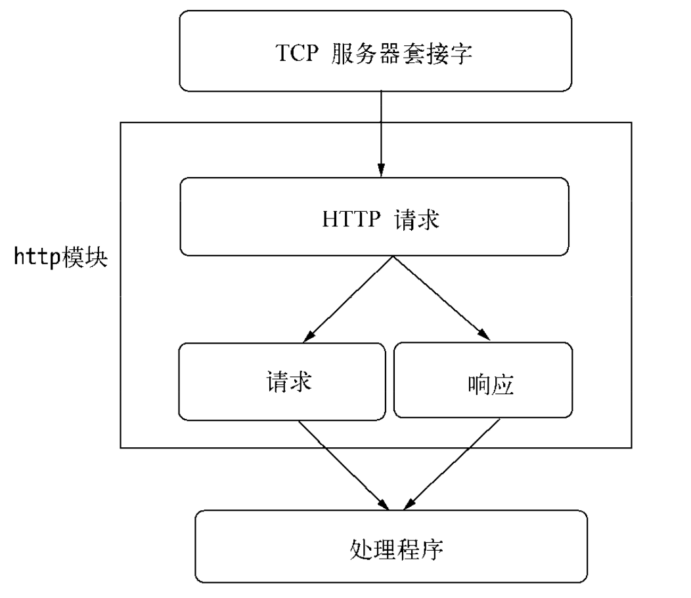
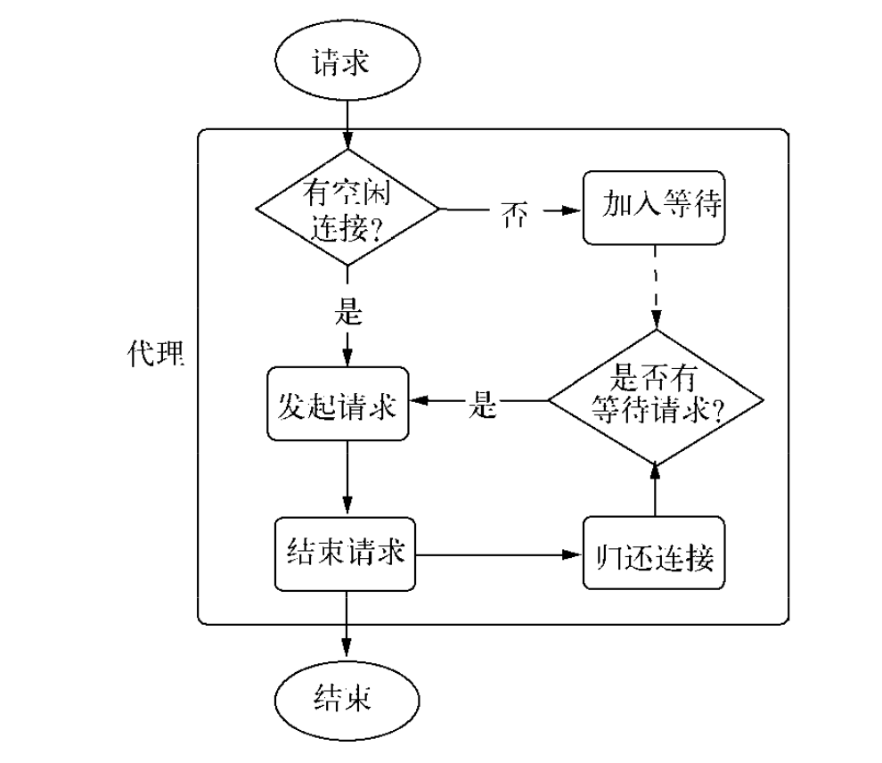
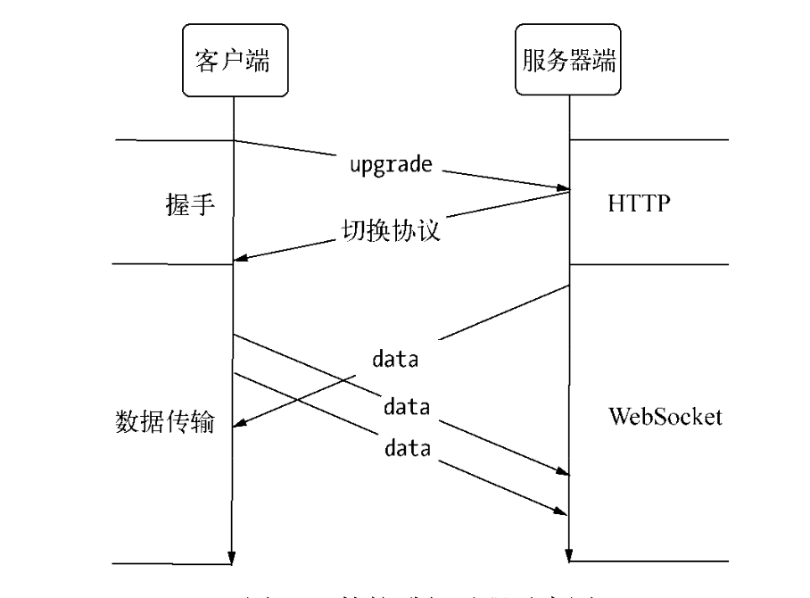
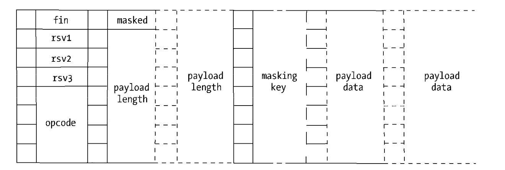
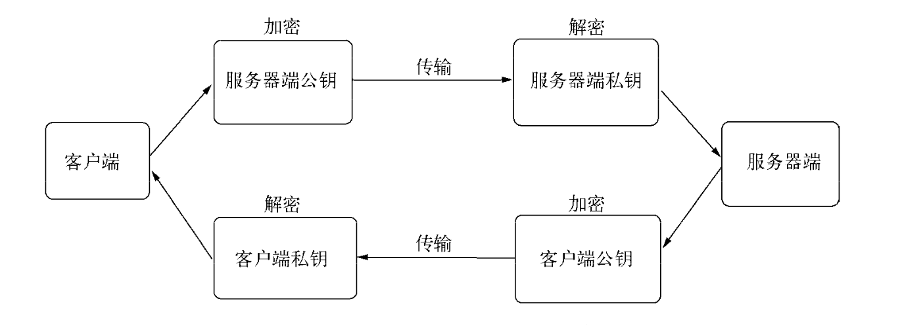
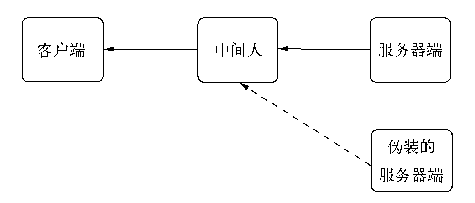
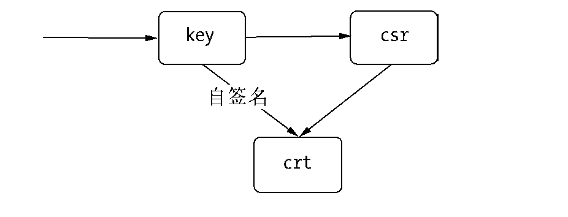
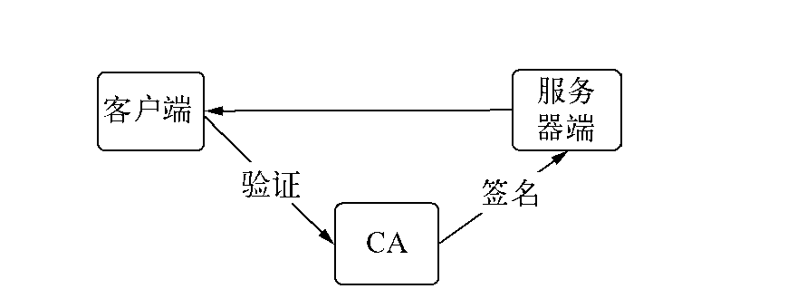

前言
Node面向网络而生：
- 事件驱动
- 无阻塞
- 单线程
- 轻量，适合在分布式网络中使用
- API贴合网络
- 对于Node，只需要几行代码即可构建服务器，无需额外的容器
- Node提供了
net、dgram、http、https4个模块，分别用于处理TCP、UDP、HTTP、HTTPS，适用于服务器端和客户端。构建TCP服务
创建TCP服务器
1 | var net = require('net'); |
TCP服务的事件
| 服务器事件 | |
|---|---|
| listening | 调用server.listen绑定端口或者Domain Socket后触发，server.listen(port, listeningListener) |
| connection | 每个客户端套接字连接到服务器端时触发，net.createServer()，最后一个参数传递 |
| close | 服务器关闭时触发，调用server.close后，服务器将停止接收新的套接字连接，但是保持当前存在的连接，等待所有连接都断开后，触发该事件 |
| error | 服务器发生异常时，将会触发该事件 |
| 连接事件 | |
|---|---|
| data | 一端调用write发送方数据时，另一端会触发data事件，事件传递的数据即是write发送的数据 |
| end | 连接中的任意一端发送了FIN数据时，将会触发该事件 |
| connect | 该事件用于客户端，当套接字与服务器端连接成功时会被触发 |
| drain | 任意一端调用write发送方数据时，当前这端会触发此事件 |
| error | 发生异常时，将会触发该事件 |
| close | 套接字完全关闭时，触发该事件 |
| timeout | 一定时间后连接不再活跃时，该事件将会被触发，通知用户当前此连接已经被闲置了 |
TCP套接字是可写可读的Stream对象，可以利用pipe()方法巧妙的实现管道操作。
在Node中，TCP默认开启了Nagle算法，可以调用
socket.setNoDelay(true)去掉Nagle算法，使得write可以立即发送数据到网络中。
尽管在网络的一端调用
write会触发另一端的data事件，但是不意味和每次write都会触发一次data事件，在关闭Nagle算法后，接收端可能接收到多个小数据包的合并，然后只触发一次data事件。
构建UDP服务
UDP特点：
- 不面向连接
- 不可靠信息传输服务，网络差时，丢包严重
- 无需连接，资源消耗低，处理快速且灵活
- 用于丢少量包不会影响的场景，如音频，视频等
- 应用广泛，DNS服务基于它实现
UDP套接字创建
1 | var dgram = require('dgram'); |
UDP服务器端创建
UDP套接字接收网络消息，只要调用dgram.bind(port, [address])方法绑定网卡和端口即可。绑定完成后，触发listening事件。
eg:
1 | var dgram = require('dgram'); |
UDP客户端创建
1 | var dgram = require('dgram'); |
socket.send(buf, offset, length, port, adress, [callback])
- 要发送的buffer、buffer的偏移，buffer的长度，目标端口，目标地址，发送完成后的回调
UDP套接字事件
| UDP套接字事件 | |
|---|---|
| message | UDP套接字侦听网卡端口后，接收到消息时触发该事件，触发携带的数据为消息buffer对象和一个远程地址信息 |
| listening | UDP套接字开始侦听时触发该事件 |
| close | 调用close方法时触发该事件，并不再触发message事件 |
| error | 发生异常时，将会触发该事件，如果不侦听，异常将直接抛出，使进程退出 |
构建HTTP服务
http模块
- 在Node中，HTTP服务继承于TCP服务器（net模块）
- 能够与多个客户端保持连接
- 采用事件驱动
- 不为每一个连接创建额外的线程或进程，保持很低的内存占用，所以能实现高并发
HTTP服务与TCP服务区别：
- 开启keepalive后，一个TCP可以用于多次请请求响应
- TCP服务以connection 为单位服务，HTTP服务以request为单位服务
http在底层将连接所用套接字的读写抽象为ServerRequest和ServerResponse对象。请求产生过程中，http拿到连接中传来的数据，调用二进制模块http_parser进行解析，解析请求报文完成后，触发request事件，调用用户的业务逻辑。

http请求
对于TCP连接的读操作，http将其封装为ServerRequest，报文头通过http_parser进行解析。
请求报文：
1 | > GET / HTTP/1.1 |
报文头第一行GET/HTTP/1.1被解析之后分解为如下属性。
req.method：值为GET，为请求方法，常见的请求方法有有GET、POST、DELETE、PUT、CONNECT等。
eq.ur：值为/。
req.httpVersion：值为1.1。
其余报头是规律的的Key: Value格式，解析后放在req.headers传给业务逻辑供调用。
报文体部分抽象为一个只读流对象，若是业务逻辑需要读取报问题中的数据，则要在这个流结束后再操作。
http响应
报文头部信息：的API为
res.setHeader()和res. writeHead()。res.writeHead(200, {'Content-Type': 'text/plain'});
1 | < HTTP/1.1 200 OK |
可以调用res.setHeader()进行多次设置，但是只有调用res. writeHead()后，报头才会写入连接中。
报文体部分：则是调用res.write()和res.end()方法实现。
res.end()先调用write()发送数据，然后发送信号告知此次响应结束，响应结束后，HTTP服务器可能将当前连接用于下一次请求或是关闭连接。
报头是在报文体发送前发送的，一旦开始了数据的发送，
res.setHeader()和res. writeHead()将不再生效。
务必在结束时调用res.end()，否则客户端一直处于等待状态。
http服务事件
| http服务事件 | |
|---|---|
| connection事件 | 在开始HTTP请求和响应前，客户端与服务端要建立底层的TCP连接，这个连接可能因为开启keep-alive，可以在多次请求和响应之间使用；这个连接建立时，服务端触发一次connection事件。 |
| request事件 | 建当请求发送到服务端，在解析出HTTP请求头后触发该事件。 |
| close事件 | 已有的连接都断开后，触发该事件。 |
| checkContinue事件 | 某些客户端在发送较大的数据时，并不会将数据直接发送，而是先发送一个头部带Expect: 100-continue的请求到服务器，服务器将会触发checkContinue事件；如果没有为服务器监听这个事件，服务器将自动响应客户端100 Continue的状态码，表示接受数据上传；如果不接受的数据较多时，响应客户端400 Bad Request拒绝客户端继续发送数据即可。和request事件互斥。 |
| connect事件 | 客户端发起CONNECT请求时触发。 |
| upgrade事件 | 客户端要求升级连接的协议时，需要和服务器端协商，客户端会在请求头中带上Upgrade字段，服务器端会在接受到这样的请求时触发该事件。 |
| clientError事件 | 发生异常时，将会触发该事件，错误传到服务端 |
HTTP客户端
- 产生报文头和报文体
http.request(options, connect)构造客户端，options请求头内容。
1 | var options = { |
http代理
为了重用TCP连接，http模块包含一个默认的客户端代理对象http.globalAgent，它对每个服务端（host+port）创建的连接进行管理，实质是一个连接池。

默认情况，通过ClientRequest对同一个服务端发起的HTTP请求最多可以创建5个连接。若是调用客户端同时对一个服务器发起10次http请求，实质上只有5个请求处于并发状态，后续请求需要等待某个请求完成服务才真正发出。
可以设置options的agent选项为false，以脱离线程池的管理，使得请求不受并发的限制。
http客户端事件
| http客户端事件 |
|---|
| response |
| socket |
| connect |
| upgrade |
| continue |
构建WebSocket服务
- WebSocket客户端机基于事件驱动，可以与Node应用良好
- WebSocket实现了客户端与服务器端之间的长连接
- 客户端与服务器端之间之间只建立一个TCP连接
- WebSocket服务器端可以推送数据到客户端
- 更轻量级的协议头，减少数据传送量
- 可以双向通信
- WebSocket协议属于应用层协议
- WebSocket握手的部分由HTTP完成，一次握手，握手成功后，数据就直接从TCP通道传输，与Http无关
- WebSocket的协议主要分为两个部分：握手和数据传输
socket.io在此基础上实现
eg:
1 | var socket = new WebSocket('ws://127.0.0.1:12010/updates'); |
WebSocket之前，Comet：
- 长轮询或iframe流
- 长轮询
- 客户端向服务端发起请求，服务器端只在超时或有数据响应时断开连接(
res.send())；客户端在收到数据或者超时后重新发起请求。
- 客户端向服务端发起请求，服务器端只在超时或有数据响应时断开连接(
WebSocket握手
- 客户端建立连接时，通过HTTP发起请求报文，如下所示：
1 | GET /chat HTTP/1.1 |
- 服务器端在处理完请求后，响应如下报文
1 | HTTP/1.1 101 Switching Protocols |
告知客户端正在更换协议，更新应用层协议为WebSocket协议，并在当前的套接字连接上应用新协议。客户端将会校验Sec-WebSocket-Accept的值，如果成功，将开始数据传输。
一旦WebSocket握手成功后，服务器端与客户端将会呈现对等的效果，都能接收和发送消息。
WebSocket数据传输
握手顺利完成后，当前连接不再进行HTTP的交互，而是开始WebSocket的数据帧协议。

握手完成后，客户端的onopen()将会被触发。
1 | socket.onopen = function () { |
为了完成TCP套接字事件到WebSocket事件的封装，需要在接收数据时进行处理，WebSocket数据帧协议即是在底层data事件上封装完成的。
1 | WebSocket.prototype.setSocket = function (socket) { |
发送数据时，也要封装：
1 | WebSocket.prototype.send = function (data) { |
- 客户端调用
send发送数据时，服务端触发onmessage，反之亦然。 - 调用
send发送1条数据时，协议可能将这个数据封装为一帧或多帧数据，然后逐帧发送。 - 为了安全考虑，客户端需要对发送的数据帧进行掩码处理，服务器一旦收到无掩码帧（比如中间拦截破坏），连接将关闭。
- 服务器发送到客户端的数据帧则无需做掩码处理，若是客户端收到带掩码的数据帧，连接也会关闭。
WebSocket数据帧定义，8位为一列：

| WebSocket数据的定义 | |
|---|---|
| fin | 如果这个数据帧是最后一帧，这个fin位为1，其余情况为0。当一个数据没有被分为多帧时，它既是第一帧也是最后一帧。 |
| rsv1、rsv2、rsv3 | rsv1、rsv2、rsv3：各为1位长，3个标识用于扩展，当有已协商的扩展时，这些值可能为1，其余情况为0。 |
| opcode | 长为4位的操作码，可以用来表示0到15的值，用于解释当前数据帧。0表示附加数据帧，1表示文本数据帧，2表示二进制数据帧，8表示发送一个连接关闭的数据帧，9表示ping数据帧，10表示pong数据帧，其余值暂时没有定义。ping数据帧和pong数据帧用于心跳检测，当一端发送ping数据帧时，另一端必须发送pong数据帧作为响应，告知对方这一端仍然处于响应状态。 |
| masked | 表示是否进行掩码处理，长度为1。客户端发送给服务器端时为1，服务器端发送给客户端时为0 |
| payload length | 一个7、7+16或7+64位长的数据位，标识数据的长度，如果值在0~125之间，那么该值就是数据的真实长度；如果值是126，则后面16位的值是数据的真实长度；如果值是127，则后面64位的值是数据的真实长度 |
| masking key | 当masked为1时存在，是一个32位长的数据位，用于解密数据 |
| payload data | 我们的目标数据，位数为8的倍数 |
客户端发送消息时，需要构造一个或多个数据帧协议报文。由于hello world!较短，不存在分割为多个数据帧的情况，又由于hello world!会以文本的方式发送，它的payload length长度为96（12字节x8位/字节），二进制表示为1100000。所以报文应当如下：
1 | fin(1) + res(000) + opcode(0001) + masked(1) + payload length(1100000) + masking key(32位) + payload data(hello world!加密后的二进制) |
客户端发送消息后，服务器端在data事件中接收到这些编码数据，然后解析为相应的数据帧，再以数据帧的格式，通过掩码将真正的数据解密出来，然后触发onmessage()执行，如下所示：
1 | socket.onmessage = function (event) { |
回复：
1 | fin(1) + res(000) + opcode(0001) + masked(0) + payload length(1100000) + payload data(yakexi的二进制) |
如何解析数据帧和触发onmessage()，请参考ws模块的实现。
网络服务与安全
SSL协议（Secure Sockets Layer，安全套接层）
- 一种安全协议，在传输层提供对网络连接加密的功能
- 对于应用层而言，是透明的，数据在传递到应用层之前就已经就已经完成了加密和解密的过程
- IETF标准化后，称为TLS(Transport Layer Security，安全传输层协议)
Node在网络安全方面提供了3个模块
- crypto：主要用于加密解密，SHA1、MD5等加密算法都在其中有体现
- tls：建立在TLS/SSL加密的tcp连接之上
- https
TLS/SSL
- 密钥
- TLS/SSL是一个公钥/私钥的结构
- 非对称结构
- 每个客户端和服务端都有自己的公私钥
- 公钥用来加密要传输的数据，私钥用来解密接收到的数据
- 公钥和私钥是配对的，通过公钥加密的数据，只有通过私钥才能解密，所以在建立安全传输之前，客户端和服务端之间要先互换公钥
- 客户端发送数据时要通过服务端的公钥进行加密，服务端发送数据时则需要客户端公钥加密

- Node底层采用的是openssl实现TLS/SSL的，生成公钥和私钥可以通过openssl完成
1 | // 生成服务器端私钥 |
上述命令生成了两个1024位长的RSA私钥文件，我们可以通过它继续生成公钥，如下所示：
1 | $ openssl rsa -in server.key -pubout -out server.pem |
公私钥的非对称加密虽好，但是网络中依然可能存在窃听的情况，典型的例子是中间人攻击。
客户端和服务器端在交换公钥的过程中，中间人对客户端扮演服务器端的角色，对服务器端扮演客户端的角色，因此客户端和服务器端几乎感受不到中间人的存在。为了解决这种问题，数据传输过程中还需要对得到的公钥进行认证，以确认得到的公钥是出自目标服务器。如果不能保证这种认证，中间人可能会将伪造的站点响应给用户，从而造成经济损失。图7-9是中间人攻击的示意图。

为了解决这个问题，TLS/SSL引入了数字证书来认证。与直接用公钥不同，数字证书中包含了服务器的名称与主机名、服务器的公钥、签名颁发机构的名称、来自签名颁发机构的签名。在连接建立之前，通过证书中的签名确认收到的公钥是来自目标服务器的，从而产生信任关系。
- 数字证书
CA(Certificate Authority，数字证书认证中心)，为站点颁发证书，且这个证书中具有CA通过自己的公钥和私钥实现的签名。
为了得到签名证书，服务器端需要通过自己的私钥生成CSR（Certificate Signing Request，证书签名请求）文件。CA机构将通过CSR颁发属于该服务器端的签名证书，只要通过CA机构就能验证证书是否合法。
通过CA机构颁发证书通常是一个烦琐的过程，需要付出一定的精力和费用。对于中小型企业而言，多半是采用自签名证书来构建安全网络的。所谓自签名证书，就是自己扮演CA机构，给自己的服务器端颁发签名证书。以下为生成私钥、生成CSR文件、通过私钥自签名生成证书的过程：
1 | $ openssl genrsa -out ca.key 1024 // 生成私钥 |

客户端在发起安全连接前会去获取服务器端的证书，并通过CA的证书验证服务器端证书的真伪。除了验证真伪外，通常还含有对服务器名称、IP地址等进行验证的过程。

CA机构将证书颁发给服务器端后，证书在请求的过程中会被发送给客户端，客户端需要通过CA的证书验证真伪。如果是知名的CA机构，它们的证书一般预装在浏览器中。如果是自己扮演CA机构，颁发自有签名证书则不能享受这个福利，客户端需要获取到CA的证书才能进行验证。上述的过程中可以看出，签名证书是一环一环地颁发的，但是在CA那里的证书是不需要上级证书参与签名的，这个证书我们通常称为根证书。
TLS服务
创建服务器端
将构建服务所需要的证书都备齐之后，我们通过Node的tls模块来创建一个安全的TCP服务，这个服务是一个简单的echo服务，代码如下：
1 | var tls = require('tls'); |
TLS客户端
在构建我们的客户端之前，需要为客户端生成属于自己的私钥和签名，代码如下：
1 | // 创建私钥 |
1 | var options = { |
HTTPS服务
HTTPS服务就是工作在TLS/SSL上的HTTP。
- HTTPS服务需要用到私钥和签名证书，我们可以直接用上文生成的私钥和证书。
- 创建HTTPS服务
- 创建HTTPS服务只比HTTP服务多一个选项配置
1 | var https = require('https'); |
启动之后通过curl进行测试，相关代码如下所示：
1 | $ curl https://localhost:8000/ |
- curl工具尤法验证服务器端证书是否正确，所以出现了上述的抛错，要解决上面的问题有两种方式。一种是加-k选项，让curl工具忽略掉证书的验证，这样的结果是数据依然会通过公钥加密传输，但是无法保证对方是可靠的，会存在中间人攻击的潜在风险。其结果如下所示：
1 | $ curl -k https://localhost:8000/ |
- 另一种解决的方式是给curl设置–cacert选项，告知CA证书使之完成对服务器证书的验证，如下所示：
1
2$ curl --cacert keys/ca.crt https://localhost:8000/
hello world
HTTPS客户端
指定证书和相关参数：
1 | var https = require('https'); |
- 如果不设置ca选项，将会得到如下异常：
[Error: UNABLE_TO_VERIFY_LEAF_SIGNATURE] - 解决该异常的方案是添加选项属性
rejectUnauthorized为false，它的效果与curl工具加-k一样，都会在数据传输过程中会加密，但是无法保证服务器端的证书不是伪造的.